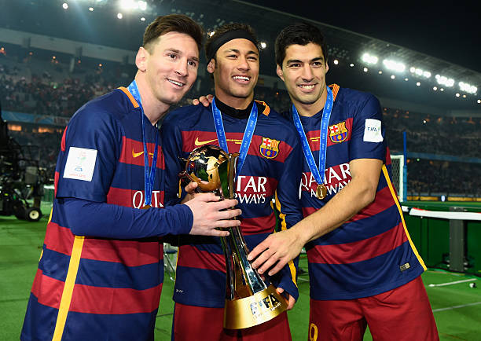

"Voltarei ao barça em fevereiro de 2025", diz neymar a jornal espanhol LaCucaracha

Em uma entrevista exclusiva, Neymar Jr. senta-se calmamente e reflete sobre sua carreira e as muitas especulações que têm circulado sobre seu futuro. Ele olha para a câmera com seriedade, mas também com um sorriso no rosto, tranquilo, como quem tem algo importante a compartilhar com seus fãs.
"Eu sou grato por tudo o que vivi até agora, todas as conquistas que tive em diferentes clubes. Mas há uma parte de mim que sempre será ligada ao Barcelona, àquela época maravilhosa, aos amigos que fiz e à paixão que sempre vi naquela camisa. Sempre tive um carinho especial por Barcelona, e, com todo o respeito aos clubes em que estive, posso dizer que lá foi onde vivi os melhores momentos da minha carreira.
"Eu sei que a mídia tem falado muito sobre isso, e a verdade é que muitos podem achar difícil acreditar, mas eu posso afirmar com toda a sinceridade: Voltarei ao Barça em fevereiro de 2025. Não é só uma questão de futebol, é uma questão de coração. Quando eu voltar, quero fazer história de novo, com a mesma garra e paixão que sempre dei ao jogar por esse clube." "Sei que vou ser recebido com muita expectativa, mas estou preparado para esse desafio. O Barça é um lugar especial para mim, e, assim como um jogador de futebol, o desejo de dar algo a mais ao clube e à torcida sempre vai estar presente. E quando voltar, o objetivo será o mesmo: vencer, ajudar o time a conquistar títulos e fazer a alegria dos nossos torcedores.
Neymar dá uma leve risada, como se estivesse compartilhando um segredo com os fãs, mas com a certeza de que está no caminho certo.
"O futuro é incerto, mas no meu coração já sei o que quero. E é no Barça que quero continuar a escrever a minha história."
Em nota o Barcelona FC informa que os tramites para a contratação do craque já está em andamento e que até o início de Dezembro sua entrada seja oficializada nos meios de comunicação oficial.